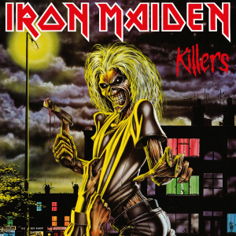
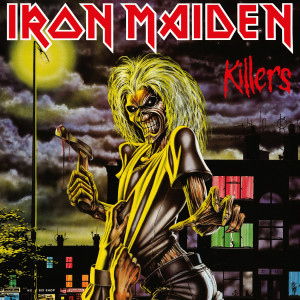

Iron Maiden are an institution. Over the course of nearly 40 years they have come to embody a spirit of fearless creative independence, ferocious dedication to their fans, and a cheerful indifference to their critics that’s won them a following that spans every culture, generation, and time-zone. A story of gritty determination and courageous defiance of the naysayers, theirs has been an adventure like no other, and with the rapturous receipt of their 16th studio album they’re showing no signs of slowing down. Their 16th, and most recent studio album, neatly encapsulates Iron Maiden’s huge creative range, The Book Of Souls is nothing less than a 92-minute masterpiece - a cannon-blast of exuberant, anthemic bravado that serves as cast-iron confirmation of just how much they have left in the tank. From the infectious, stadium-skewering hooks of The Red And The Black to the lofty ambition of the 18-minute Empire Of The Clouds, it’s the artistic summation of everything that’s given Iron Maiden such deep resonance and universal appeal. Like the breathless excitement and scale of their stage shows, their remarkable new double-album is emblematic of a stout-hearted refusal to do anything by half-measures and an irrepressible sense of fun.
Founded by bassist Steve Harris in the mid ‘70s, Iron Maiden were already firmly established as heavy metal’s brightest hopes when they stormed the world with their third album (and first with vocalist Bruce Dickinson) The Number Of The Beast in 1982. It would kick off a decade of classic releases and dogged touring that would come to epitomise the unrelenting, uncompromising, unswerving commitment they are now so well known for. That marvellous decade would also yield seven new studio albums, one live album, seven World Tours, as well as the creation of Eddie - one of the most iconic and recognisable figureheads of our age and the calling card of the most impassioned fan-bases anywhere.
Bruce Dickinson(Vocals, Piano)
Dave Murray (Guitar)
Janick Gears (Guitar)
Adrian Smith (Guitar, Backing Vocals)
Steve Harris (Bass, Backing Vocals)
Nicko McBrain (Drums)


 
